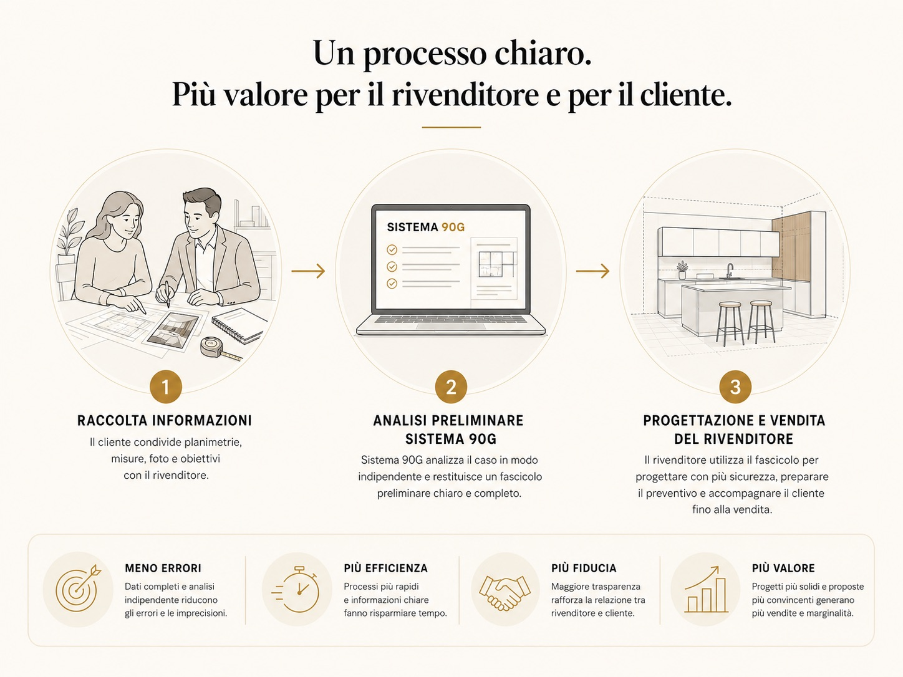

Da sviluppare
Progetto Cucina 90G · 145 €
Quando serve costruire una soluzione cucina all'interno di un progetto più ampio, senza assorbire nel tuo incarico tutto il lavoro di dettaglio.
Una competenza verticale quando serve più dettaglio sulla cucina
Sistema 90G può affiancare architetti, geometri, interior designer, imprese e agenzie immobiliari quando la cucina richiede tempo, confronto o sviluppo specialistico. Tu mantieni il rapporto con il cliente e la regia del tuo lavoro.
Il cliente finale resta associato al professionista che presenta il caso.

Quando può essere utile
Può servire sviluppare la cucina, controllare una proposta già esistente oppure risolvere una scelta specifica.
Da sviluppare
Quando serve costruire una soluzione cucina all'interno di un progetto più ampio, senza assorbire nel tuo incarico tutto il lavoro di dettaglio.
Da controllare
Quando esiste già una proposta, un preventivo o un progetto e vuoi una seconda lettura specialistica prima di procedere.
Una scelta specifica
Quando il nodo riguarda, per esempio, materiali, elettrodomestici, finiture, accessori o altre alternative circoscritte.
Supporto su composizione, ergonomia, passaggi, elettrodomestici, materiali e coordinamento con la proposta del rivenditore quando la cucina richiede un approfondimento verticale.
Coordinamento della cucina rispetto a spazio e predisposizioni prima che decisioni ancora aperte diventino difficili o costose da modificare.
Lettura preliminare del problema cucina quando lo spazio può incidere sulla comprensione o valorizzazione dell'immobile, senza sostituire verifiche tecniche o perizie.
Ruoli chiari
Sistema 90G interviene sul problema concordato. Direzione generale del progetto, responsabilità professionali e relazione con il cliente finale restano a chi ha l'incarico.
Prima valutazione
Invia ciò che hai già e indica cosa vuoi approfondire. Prima controlliamo se Sistema 90G può essere utile; solo dopo, se serve, viene indicato il lavoro adatto e il relativo prezzo.
L'invio non avvia automaticamente un servizio. Sistema 90G non contatta autonomamente il cliente finale presentato dal professionista.